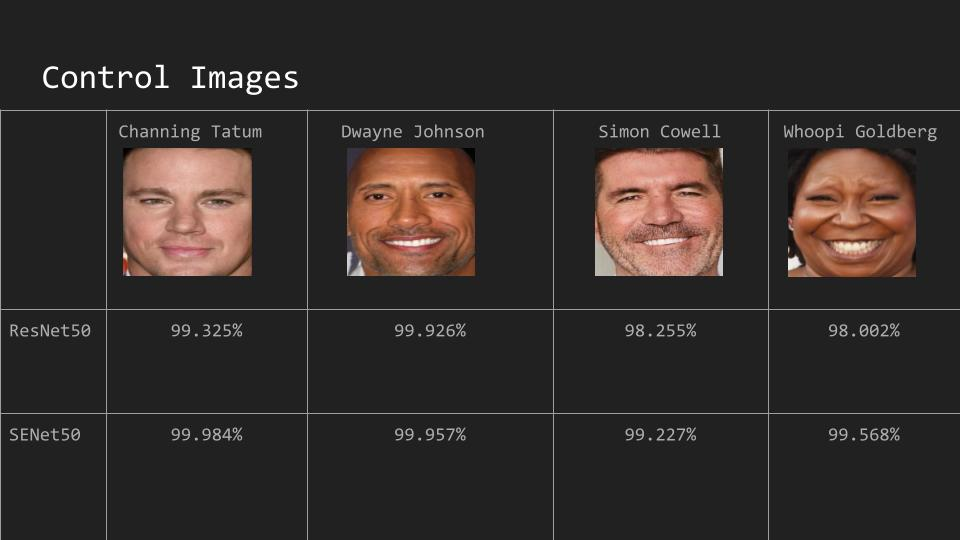
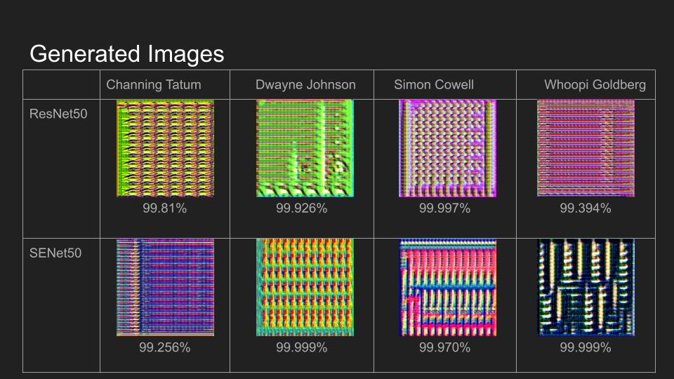

Blog Posts
A Brief Introduction To Adversarial Networks

Most people have seen deep fakes and AI generated images online but people often don’t know the underlying technology behind it. For my senior Capstone, I am conducting a research project which uses Adversarial Networks and found this to be a very cool realm of machine learning.

The basic design of a Adversarial system include two different networks, the generator and the discriminator. The Generator will simply take in a random seed as an input and use that number to calculate pixel values. The Discriminator will be paired with a training set which is a mix of real images and generated images. It will then train over this set and classify them as either real or fake. Both networks will then be trained on the accuracy of the discriminator but in opposite directions. While the discriminator will try to maximize it’s accuracy, the generator will try to minimize it by generating images that the discriminator will think its real. This process has been used and has produce some facinating results in the machine learning sphere.
Tidy Models Tutorial
In this tutorial I will walk you through how to fit a linear model to a data set using the tidy models package. In this tutorial I will be using a CalCOFI data set of oceanic measurements of temperature in Celsius and depth in Meters. Here we will see what the relationship between temperature and depth shallower than 500 meters.
Libraries
library(tidymodels)
library(tidyverse)
library(ggplot2)
library(readr)
Step 1 - Import and Setup Dataset
Our first step will be to import CalCOFI data and filter for our desired depth, done by the R code below.
#Base Dataset
CalCOFI <- read.csv("CalCOFI.csv")
# Depth lower than 500 filtered out
CalCOFI <- CalCOFI %>%
filter(Depthm < 500)
Step 2 - Initial Visualization
Before we begin modeling, we will want to see if linear modeling is applicable in this case. We can do this by some data visualization with a linear trend line, done by the R code below.
CalCOFI %>%
ggplot(aes(Depthm, T_degC)) + geom_point() + geom_smooth(method = "lm", se = FALSE)
Based on the graph above, the fit can be roughly described as linear and makes linear regression applicable.
Step 3 - Build and Fit Model
Now we can Build and fit out model to our data, done by the R code below.
# Build
model <- linear_reg() %>%
set_engine("lm")
# Fit
fit <- model %>%
fit(T_degC~Depthm, data = CalCOFI)
Step 4 - Interpretation
Our last step is to interpret the model we have fit. So to view our coefficients, see R code below.
tidy(fit)## # A tibble: 2 x 5
## term estimate std.error statistic p.value
## <chr> <dbl> <dbl> <dbl> <dbl>
## 1 (Intercept) 15.0 0.00415 3609. 0
## 2 Depthm -0.0239 0.0000225 -1065. 0From this we can see an association of depth to temperature of -0.0239. This means that on average, for every single meter increase of depth would result a decrease in temperature of 0.0239 Celsius.
Fooling Facial Recognition Software Using Convoltional Generative Adversarial Networks
Background
Facial Recognition software is becoming more and more prevalent in our daily lives from our phones to law enforcement. To help prevent the misuse of this kind of software we should further our understanding of these algorithms so they don’t remain as mysterious black boxes. This project’s goal was to test the accuracy of open-source pre-trained Facial Recognition models using Deep Convolutional Generative Adversarial Networks or DCGANs. The DCGAN was used to generate images from random noise which would then be scored based on what confidence score it can elicit from pre-existing facial recognition models for a specific person’s Identity (such as The Rock). This project focuses on generating images that are identified as one of four recognized Identities by the recognition model. The generated test images that had a high confidence score of being a recognized image were subsequently looked at by humans to see if they looked like their classified identities. This will give us insight on how an end user can create fake generated images and still elicit high confidence scores from facial recognition software.
Experiment Overview

Noise:
- normally distributed random numbers
Generator: Deep Convolutional Generator
Input Layer:
100 values Hidden Layers:
Fully Connected
Transposed Convolution A.K.A Deconvolution
Activation Function: LeakyReLU
Output Layer:
- 224 x 224 pixels
- Activation Function: Sigmoid
Facial Recognition Model
VGGFace2 Models implemented in Keras
- Input preprocessing
- Convolutional Architectures
- ResNet50 and SENet50
Output:
- Confidences on 8631 Identities
Training the Generator
Setup in Jupyter using Python
- Each Generator focuses on 1 Identity
- Batch size of 5
- Loss based on how high a confidence the Recognition Model outputs
- Loss Calculated using Cross Entropy
- Exponentially Decaying Learning Rate
GPU:
- NVIDIA GeForce GTX 1660 Ti with Max-Q Design
Results
Real Face Controls

Generated Images

Conclusion
The results of this project show that it is possible to train a Generator for each Identity in the VGGFace2 and achieve a high confidence score. This method is still contingent on having access to the full model. This indicates that open source models such as these can be fooled by potentially malicious actors while other closed-source models may remain safe, but more research would be advised. Future research would best be targeted at replication using smaller generators, testing other learning rates and loss functions, testing this method for Facial Detectors since they are often paired with Facial Recognition, and using this method to improve model accuracy through training with generated false images.